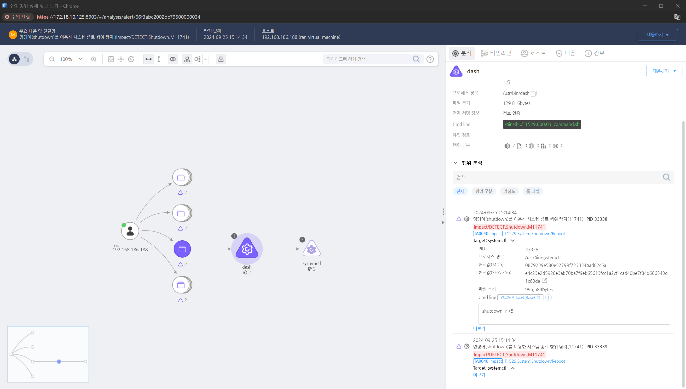

MITRE ATT&CK 액션을 기준으로 대응 방안을 작성
명령어(shutdown)를 이용하여 시스템을 종료하는 행위를 탐지합니다.

journalctl 명령어를 사용해 시스템 재부팅 또는 종료 관련 로그를 분석합니다. /var/log/messages 또는 /var/log/syslog 파일을 통해 시스템 재부팅이나 종료와 관련된 이벤트를 추적합니다.
종료 또는 재부팅이 루트 권한에 의해 정상적으로 이루어진 것인지, 또는 비정상적인 방법으로 시도된 것인지 확인합니다. last 명령어를 통해 시스템 종료 또는 재부팅 시간을 확인할 수 있습니다.
재부팅 또는 종료 시도를 한 프로세스와 명령어(shutdown, reboot, halt)를 추적합니다. ps, pstree, top 등의 도구를 사용해 종료 또는 재부팅을 시도한 프로세스를 분석합니다.
시스템 종료나 재부팅을 시도한 사용자 계정을 분석하고, 해당 계정이 악의적인 목적으로 사용되었는지 여부를 조사합니다. who, w, last 명령어를 통해 접속 사용자와 세션 정보를 파악합니다.
재부팅이나 종료 전에 중앙화된 로그 서버로 전송된 로그 데이터를 복구하여 공격자가 시스템을 종료하기 전에 수행한 활동을 추적합니다.
디스크 및 메모리 포렌식 도구를 사용해 시스템 종료 이전의 상태를 복구하고, 종료 전에 실행된 악성 명령이나 프로세스를 분석합니다.
시스템 종료 또는 재부팅 시점 전후로 발생한 네트워크 활동을 분석하여 외부 서버와의 통신이 있었는지 확인합니다. Wireshark, TCPDump 등의 네트워크 분석 도구를 사용하여 악의적인 활동을 탐지합니다.
재부팅 후에도 남아 있는 파일 및 네트워크 활동을 분석하여 공격자가 다른 악성 활동을 수행했는지 여부를 조사합니다.
시스템 종료 및 재부팅 시도가 발생한 후, 관련 보안 정책을 재평가하고 강화합니다. 권한 관리, 로그 보호 및 무결성 검사 절차를 강화하여 추가적인 공격을 방지합니다.
공격자가 시스템을 종료 또는 재부팅하여 공격을 은폐하려는 경우, 침해된 시스템을 복구하고, 필요하다면 초기화 또는 백업에서 시스템을 복구합니다.
시스템 종료 및 재부팅과 관련된 모든 활동을 문서화하고, 법적 대응에 필요한 증거를 수집합니다. 재부팅 시도와 관련된 프로세스, 사용자, IP 주소 등의 정보를 기록하여 법 집행 기관에 보고할 수 있습니다.
악의적인 종료나 재부팅이 감지된 경우, 시스템을 초기화하고, 필요한 데이터를 백업 및 복구한 후, 시스템을 정상 상태로 되돌립니다.
재부팅 시도 후 시스템의 보안 설정과 절차를 검토하고, 필요한 경우 업데이트하여 이후 유사한 공격 시도를 방지합니다.
시스템 종료 권한 제한 (M1026 - Privileged Account Management)
시스템 종료 모니터링 및 알림 설정 (M1047 - System Logging & Monitoring)
자동 복구 및 시스템 백업 (M1022 - Automated Response)
시스템 세분화 및 방화벽 규칙 (M1031 - Network Segmentation)
시스템 종료 기능 잠금 (M1042 - Disable or Remove Feature or Program)
Action 실행시 함꼐 영향을 받는 다른 Techniqes
| ATT&CK |
|---|
| T1059.004 |
| D3FEND |
|---|
| D3-NTF Network Traffic Filtering |
| D3-NTA Network Traffic Analysis |
| D3-SU Software Update |